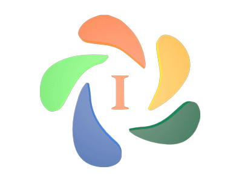

Quem Somos

Somos uma empresa prestadora de serviços atuante na Gestão Social e Educação Corporativa, qualificada diversos serviços, como mão de obra profissional terceirizada, desenvolvimento de projetos socias, educacionais e de desenvolvimento humano, consultoria, cursos, entre outros...
Desenvolvemos atendimento customizado e de encontro com os interesses dos clientes, valorizando sua cultura e equipe.
Nossa História
A empresa Iguaçu Desenvolvimento Ltda, nasce em janeiro de 2013 da necessidade de trabalho de seu fundador, qualificado com boa experiencia no mercado social e coorporativo e buscava expandir sua carreira em uma região com pouca perspectiva de trabalho. Iniciou as atividades da empresa (home office) com objetivo de buscar um posto de trabalho para atuação, foi vencedor e conseguiu trabalhar em sua área de formação.
Novas oportunidades foram surgindo, e sem perceber no mesmo ano havia empregado mais 25 pessoas. Agregando assim experiência ao mesmo tempo em que expandia a empresa. Nos anos seguintes, a empresa foi se formatando ao mercado local e regional, e desenvolvendo produtos e serviços adequados a cada realidade, pública ou privada. Em 2017 novas metas traçadas e a empresa deixa de ser regional para atender toda a região Sul do Brasil. Já em 2019 com novos objetivos, buscando ampliar o conhecimento, clientes e atuação, partimos para o Planalto Central do Brasil.
Em 2020 apesar das crises (e nestes anos foram muitas) a Iguaçu Desenvolvimento atua no Paraná, Santa Catarina, Rio Grande do Sul e Distrito Federal, ensaiando atendimento no Centro Oeste do Brasil, tendo mais de 300 profissionais em seu quadro, e escritórios nos estados do Sul e Distrito Federal.
Diferencial
A Iguaçu Desenvolvimento, vem se destacando no mercado por apresentar inovação e escuta ativa das demandas de seus Clientes. Temos como lema, ser a solução. Conta com uma equipe administrativa comprometida e competente, que diuturnamente melhora a atuação da empresa e os resultados dos Clientes.
Missão
Atender com excelência às demandas dos clientes, no desenvolvimento da Gestão Social e Educação Corporativa, na oferta de produtos e serviços que contribuam para a melhoria da qualidade de vida das pessoas, gerando sabedoria e riqueza de forma sustentável.
Visão
Ser empresa de referência, reconhecida como a melhor opção por clientes, colaboradores, comunidade, fornecedores e investidores, pela inovação e qualidade de nossos serviços, produtos e relacionamento.
Valores
- Inovação
- Integridade
- Comprometimento
- Valorização Humana
- Superação dos resultados
- Melhoria contínua
Terceirização
Por que terceirizar?
Conforme uma empresa vai crescendo, também aumentam as responsabilidades, tarefas e os objetivos a serem cumpridos. Muitas vezes, a demanda se torna tão excessiva que as equipes contratadas pela organização não dão conta de atendê-la.
A terceirização aparece como uma solução para esses casos. Assim, ao invés de perder o controle com o acúmulo de funções, você pode reestruturá-las. Passar determinada atividade para um profissional terceiro é uma forma de garantir excelência em outras áreas, fora do core business.
Desta forma, você torna sua empresa mais comprometida com os resultados e dá atenção para as mais variadas necessidades. Mas, é claro, tudo deve ser feito com muita cautela, a começar pela seleção desse serviço terceirizado.
Vantagens da terceirização
- Possibilidade de se dedicar integralmente ao crescimento do negócio, priorizando as atividades que a empresa possui vantagens competitivas
- Simplificação da estrutura administrativa, reduzindo processos complexos que demandam tempo do RH, como seleção, recrutamento, burocracias para contratação/demissão de funcionários, gerenciamento de folhas de pagamento, benefícios e aspectos relacionados a segurança do trabalho
- Garantia de contratação de profissionais especializados já capacitados e treinados, aumentando a qualidade da mão de obra e evitando a necessidade de gastos extras com treinamentos
- Possibilidade de flexibilização do quadro de funcionários, variando de acordo com as demandas sazonais da empresa
- Economia financeira assegurada e minimização de desperdícios com insumos e equipamentos, uma vez que a empresa contratada tem know-how para escolher o material correto e quantidade ideal para cada serviço
- Agilidade na reposição do funcionário caso ele não se adeque ao perfil desejado e disponibilidade de cobertura imediata em eventuais faltas ou férias, não prejudicando a continuidade do serviço, sem burocracias ou custos extras ao contratante
- Maior previsibilidade dos custos mensais, estabelecidos através de contrato firmado com a prestadora de serviço
O que considerar no momento de escolher a empresa prestadora de serviços?
É fundamental se certificar que a empresa analisada...
- Possua comprovada expertise nos serviços ofertados
- Mantenha uma significativa base de clientes bem atendidos e satisfeitos
- Atue de forma transparente, permitindo a identificação de todos os custos inerentes aos serviços oferecidos
- Seja profissional e ética nas relações com seus colaboradores e clientes
- Goze de situação financeira estável e equilibrada
- Esteja com as obrigações trabalhistas em dia
- Utilize somente produtos e equipamentos adequados e enquadrados dentro das exigências legais
- Tenha uma sólida imagem de credibilidade junto ao mercado